This article reproduces the figures of Leventer (2025),
Identification of Child Penalties, in the paper’s order. For
each figure it lists the rows of the output the figure uses, then the
code. The Israeli administrative data are confidential, so the code runs
on data from simulate_data(), and the numbers are not the
paper’s. Symbols and rows are in Notation and
output, estimators and standard errors in Estimation, and aggregate estimands in Aggregation.
Setup
The grid follows the paper’s sample (Section 1.2): treatment groups 24 to 34, event times 0 to 5, pre-treatment event times to (baseline age ), and control groups up to age 40.
library(childpen)
library(dplyr); library(tidyr); library(ggplot2)
theme_set(theme_bw(base_size = 11))
sim <- simulate_data(n_individuals = 30000, treatment_groups = 24:40)
res <- multiple_treatment_group_analysis(sim, treatment_groups = 24:34,
periods_post = 5, periods_pre = 3,
max_control_group = 40, verbose = FALSE)A helper for the pre-treatment (validation) figures, one line per control group:
pre_plot <- function(df) {
ggplot(df, aes(event_time, est, ymin = ci_l, ymax = ci_h,
colour = factor(control_offset), fill = factor(control_offset))) +
geom_hline(yintercept = 0, linetype = 2, colour = "grey50") +
geom_ribbon(alpha = 0.12, colour = NA) + geom_line() + geom_point(size = 1) +
scale_x_continuous(breaks = -4:-2) +
labs(x = "Event time", y = "Estimate", colour = "Control offset", fill = "Control offset")
}Figure 1: sample statistics (Section 1.2)
Computed from the data. (a) Age at first birth by gender.
sim |> distinct(id, female, D) |> count(female, D) |>
group_by(female) |> mutate(share = n / sum(n)) |>
ggplot(aes(D, share, fill = factor(female, 0:1, c("Men", "Women")))) +
geom_col(position = "dodge") + labs(x = "Age at first birth", y = "Share", fill = NULL)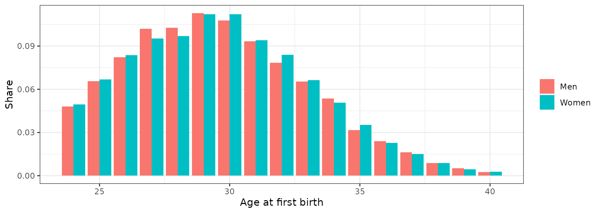
(b) Mean earnings by age, treatment group and gender; the dashed line is the age at first birth.
sim |> filter(D %in% seq(24, 34, 2)) |>
group_by(D, female, age) |> summarise(Y = mean(Y), .groups = "drop") |>
ggplot(aes(age, Y, colour = factor(female, 0:1, c("Men", "Women")))) +
geom_line() + geom_vline(aes(xintercept = D), linetype = 2, colour = "grey50") +
facet_wrap(~ D, nrow = 1, labeller = label_both) +
labs(x = "Age", y = "Mean earnings", colour = NULL)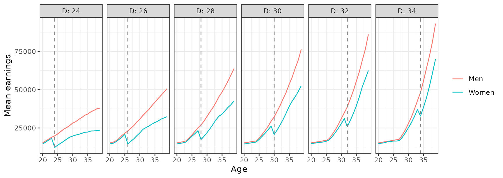
Figure 3: DID validation tests by treatment-control pair (Section 2.3)
Rows: DID_Female and DID_Male
ATE, pre-treatment event times.
res |> filter(event_time < 0, method %in% c("DID_Female", "DID_Male"), estimand == "ATE") |>
pre_plot() + facet_grid(method ~ d, scales = "free_y")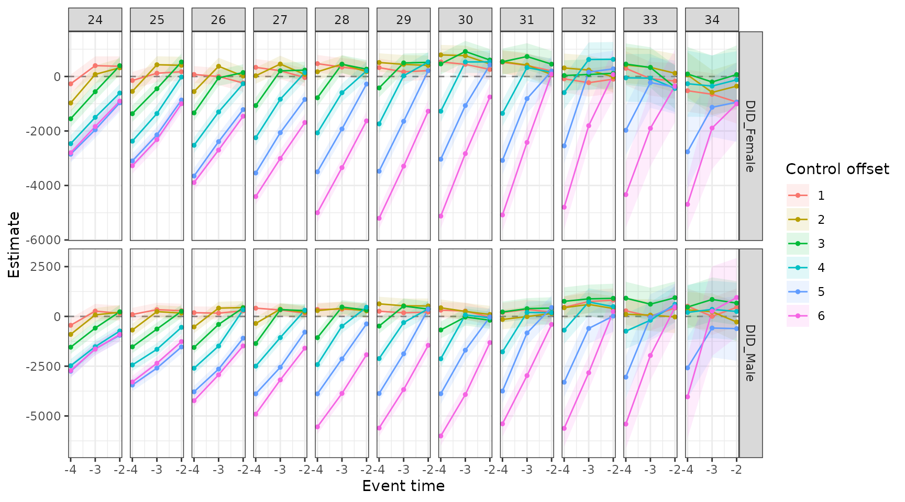
Figure 4: bias bounding of the conventional estimator (Section 3.3)
Rows: Conventional gap_theta after
treatment (line, with its 95% confidence interval in grey), and
bias_bounds() for fathers’ effects
between
and
(orange band).
conv <- filter(res, event_time >= 0, method == "Conventional", estimand == "gap_theta")
band <- bias_bounds(res, theta_m = c(-0.1, 0.1)) |>
group_by(d, event_time) |> summarise(lo = min(est), hi = max(est), .groups = "drop")
ggplot() +
geom_ribbon(data = band, aes(event_time, ymin = lo, ymax = hi), fill = "orange", alpha = 0.4) +
geom_ribbon(data = conv, aes(event_time, ymin = ci_l, ymax = ci_h), fill = "grey50", alpha = 0.3) +
geom_line(data = conv, aes(event_time, est)) +
facet_wrap(~ d, nrow = 2, labeller = label_both) +
labs(x = "Event time", y = expression(theta(f) - theta(m)))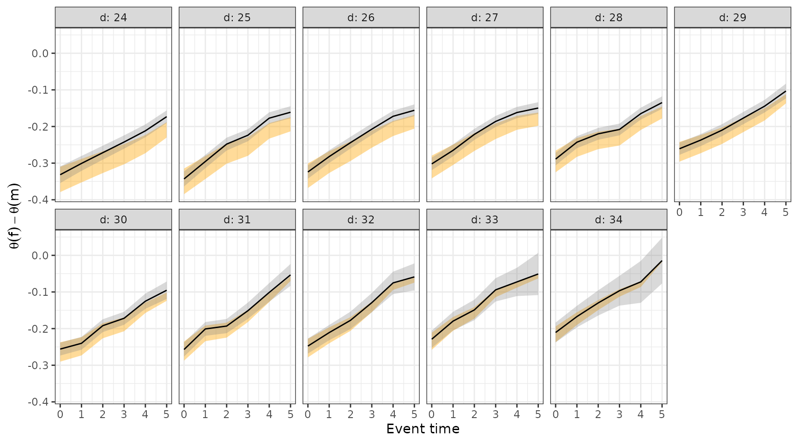
Figure 5: NTD validation tests by treatment-control pair (Section 4.2)
Rows: Conventional gap_theta, pre-treatment
event times.
res |> filter(event_time < 0, method == "Conventional", estimand == "gap_theta") |>
pre_plot() + facet_wrap(~ d, nrow = 1)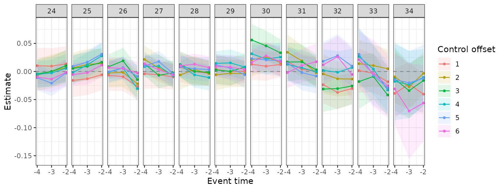
Figure 6: the effect of parenthood on the gender earnings ratio (Section 4.2)
(a) Observed and counterfactual ratios. Rows:
NTD rho_obs and rho_cf.
res |> filter(event_time >= 0, method == "NTD", estimand %in% c("rho_obs", "rho_cf")) |>
ggplot(aes(event_time, est, colour = estimand)) +
geom_hline(yintercept = 1, linetype = 2, colour = "grey50") +
geom_line() + geom_point(size = 1) + facet_wrap(~ d, nrow = 1) +
scale_colour_manual(values = c(rho_cf = "#009E73", rho_obs = "#0072B2"),
labels = c(rho_cf = "Counterfactual (DID)", rho_obs = "Observed")) +
labs(x = "Event time", y = "Female/male earnings ratio", colour = NULL)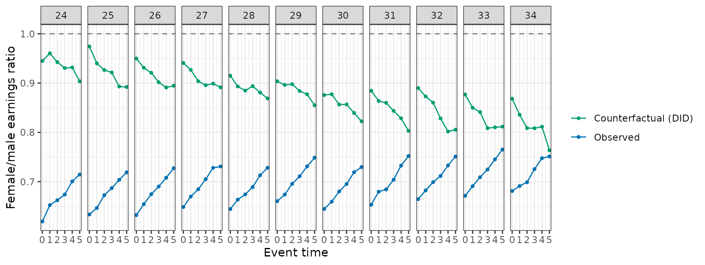
(b) The new and the conventional estimator. Rows:
NTD rho_effect and Conventional
gap_theta.
res |> filter(event_time >= 0, (method == "NTD" & estimand == "rho_effect") |
(method == "Conventional" & estimand == "gap_theta")) |>
ggplot(aes(event_time, est, ymin = ci_l, ymax = ci_h, colour = method, fill = method)) +
geom_ribbon(alpha = 0.25, colour = NA) + geom_line() + geom_point(size = 1) +
facet_wrap(~ d, nrow = 1) +
scale_colour_manual(values = c(NTD = "#D55E00", Conventional = "#56B4E9")) +
scale_fill_manual(values = c(NTD = "#D55E00", Conventional = "#56B4E9")) +
labs(x = "Event time", y = "Estimate (95% CI)", colour = NULL, fill = NULL)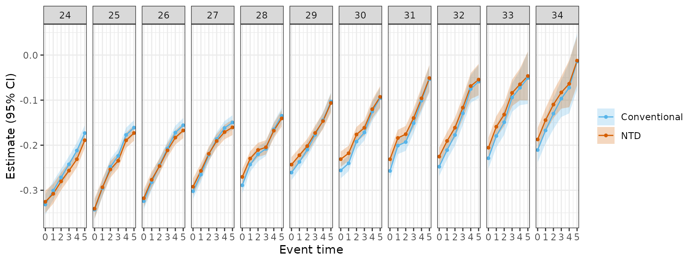
(c) Accounting for the gender gap. Rows:
NTD rho_obs and rho_cf. The
observed gap
splits into parenthood,
,
and other factors,
.
res |> filter(event_time >= 0, method == "NTD", estimand %in% c("rho_obs", "rho_cf")) |>
select(d, event_time, estimand, est) |>
pivot_wider(names_from = estimand, values_from = est) |>
mutate(Parenthood = rho_cf - rho_obs, `Other factors` = 1 - rho_cf) |>
pivot_longer(c(Parenthood, `Other factors`), names_to = "part") |>
ggplot(aes(event_time, value, fill = part)) + geom_area() +
facet_wrap(~ d, nrow = 1) +
scale_fill_manual(values = c(Parenthood = "#BFDCEC", `Other factors` = "grey80")) +
labs(x = "Event time", y = "1 - female/male ratio", fill = NULL)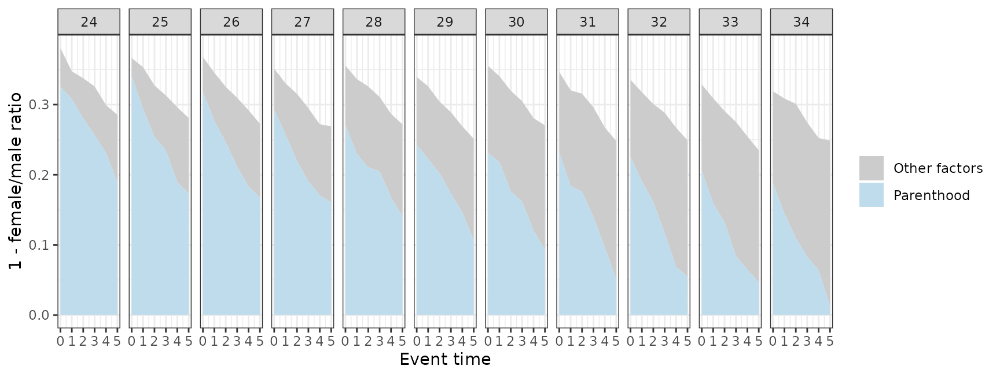
Figure 7: the gender earnings ratio before birth (Section 4.3)
Computed from the data: the female/male ratio of mean earnings at ages before the first birth.
sim |> filter(age < D, D %in% 27:38, age >= 22) |>
group_by(D, age) |>
summarise(rho = mean(Y[female == 1]) / mean(Y[female == 0]), .groups = "drop") |>
ggplot(aes(age, rho, colour = factor(D))) + geom_line() +
geom_hline(yintercept = 1, linetype = 2, colour = "grey50") +
labs(x = "Age", y = "Female/male earnings ratio", colour = "D")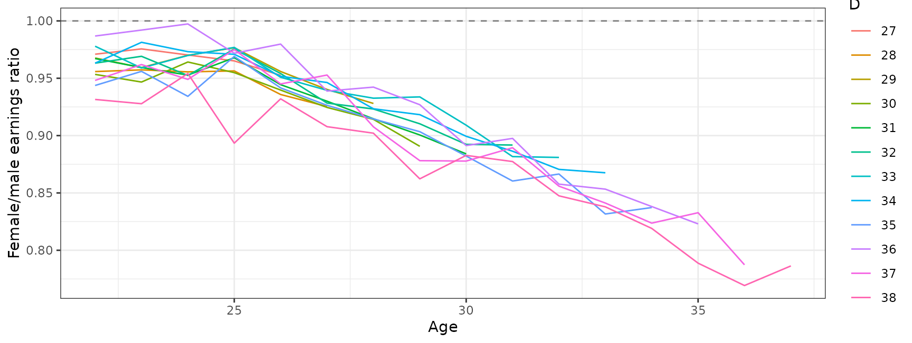
Figure 9: aggregates under different treatment distributions (Section 5.2)
Rows: aggregate_estimands(), NTD
rho_effect, weighted_avg, with the paper’s
three sets of weights: normal densities with standard deviation 3 and
means 26, 29 and 32 over groups 24 to 34.
dd <- 24:34
dists <- c(`Right-skewed` = 26, Centered = 29, `Left-skewed` = 32)
agg9 <- bind_rows(lapply(names(dists), function(k)
aggregate_estimands(res, weights = setNames(dnorm(dd, dists[[k]], 3), dd), methods = "NTD") |>
filter(estimand == "rho_effect") |> mutate(distribution = k)))
ggplot(agg9, aes(event_time, est, ymin = ci_l, ymax = ci_h)) +
geom_ribbon(alpha = 0.2) + geom_line() + geom_point(size = 1) +
facet_wrap(~ factor(distribution, names(dists)), nrow = 1) +
labs(x = "Event time", y = expression(rho[Agg](e)))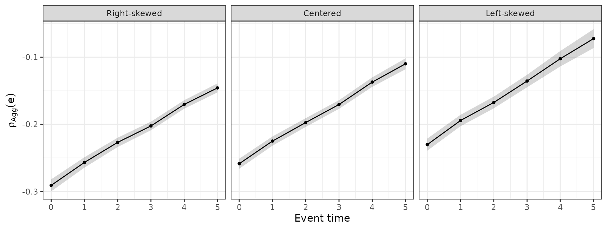
Online appendix
Validation tests of the proportional TD approaches
(online appendix on proportional DID and TD). Rows: NTD and
TD_E_LOGS rho_effect and TD_PR
gap_theta_pre, pre-treatment event times, groups 26 to
30.
res |> filter(event_time < 0, d %in% 26:30,
(method %in% c("NTD", "TD_E_LOGS") & estimand == "rho_effect") |
method == "TD_PR") |>
pre_plot() + facet_grid(method ~ d, scales = "free_y")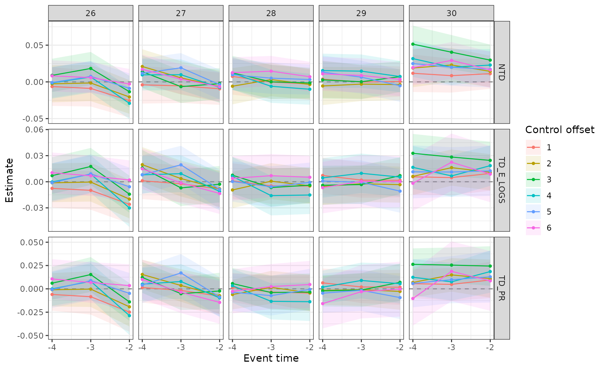
NTD and TD-E-LOGS estimates (online appendix on
proportional DID and TD). Rows: NTD and
TD_E_LOGS rho_effect, groups 26 to 30.
res |> filter(event_time >= 0, d %in% 26:30, method %in% c("NTD", "TD_E_LOGS"),
estimand == "rho_effect") |>
ggplot(aes(event_time, est, colour = method)) + geom_line() + geom_point(size = 1) +
facet_wrap(~ d, nrow = 1) +
labs(x = "Event time", y = expression(rho(d) - rho(infinity)), colour = NULL)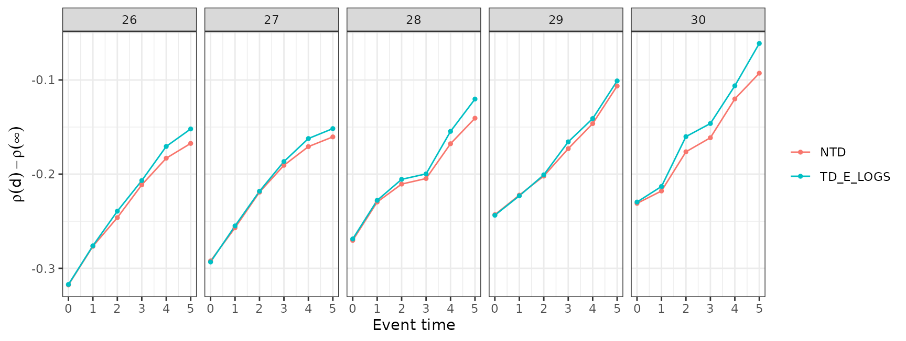
Aggregate estimates (online appendix on aggregate
estimates). Rows: aggregate_estimands(),
Conventional gap_theta and NTD
rho_effect, weighted_avg, with the default
sample weights. The paper’s figure adds the UK and Germany, from survey
data.
aggregate_estimands(res, methods = c("Conventional", "NTD")) |>
filter(estimand %in% c("gap_theta", "rho_effect")) |>
ggplot(aes(event_time, est, ymin = ci_l, ymax = ci_h, colour = method, fill = method)) +
geom_ribbon(alpha = 0.2, colour = NA) + geom_line() + geom_point() +
labs(x = "Event time", y = "Aggregate estimate (95% CI)", colour = NULL, fill = NULL)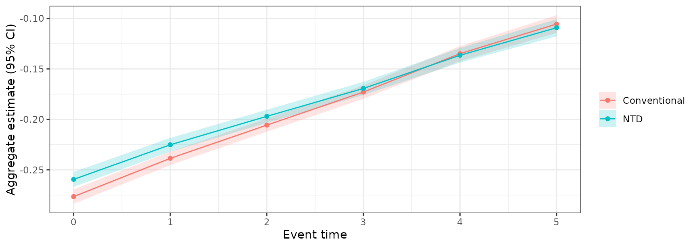
Numbers quoted in the paper
Each number in the text comes from one row of the output:
| Number in the paper | Row |
|---|---|
| Section 3.3: conventional estimate for five years after birth, and the bias-corrected range |
filter(res, method == "Conventional", d == 26, event_time == 5);
filter(bias_bounds(res), d == 26, event_time == 5)
|
| Section 4.2: effect on the gender earnings ratio for five years after birth | filter(res, method == "NTD", estimand == "rho_effect", d == 30, event_time == 5) |
| Section 4.2: counterfactual and observed ratio for at birth, and parenthood’s share | filter(res, method == "NTD", estimand %in% c("rho_cf", "rho_obs", "share_parenthood"), d == 30, event_time == 0) |
| Section 4.2: parenthood’s share at birth across | filter(res, method == "NTD", estimand == "share_parenthood", event_time == 0, d %in% 26:30) |
| Online appendix: aggregate conventional and new estimates five years after birth | filter(aggregate_estimands(res), method %in% c("Conventional", "NTD"), estimand %in% c("gap_theta", "rho_effect"), event_time == 5) |
Figures not produced by the package
| Figure | Data it needs |
|---|---|
| Figure 1(c): the normalized event study (Section 1.2; equations (1) and (2)) | a regression on event-time indicators with age and calendar-year fixed effects; needs calendar year |
| Figure 2: human capital by age at first birth (Section 2.2) | pre-birth covariates (grandparents’ earnings, test scores, high-school credits), part of the confidential data |
| Figure 8: age at first birth across countries (Section 5.2) | OECD Family Database, indicator SF2.3 |
| Online appendix: selection on fertility timing in the UK and Germany | Understanding Society with the harmonised BHPS, and SOEP-CORE |